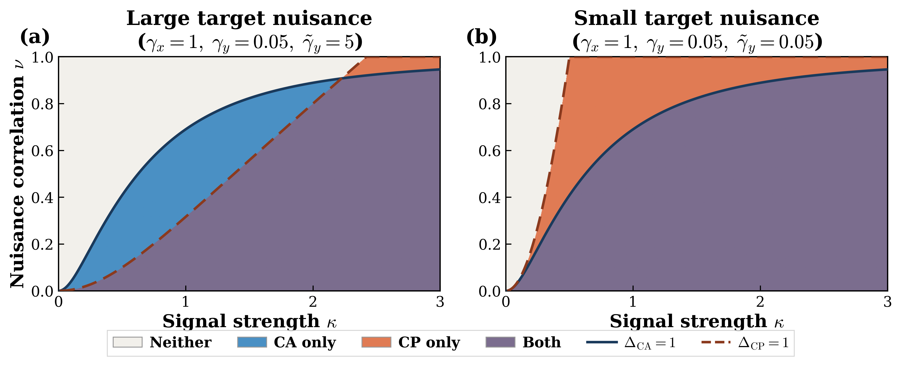
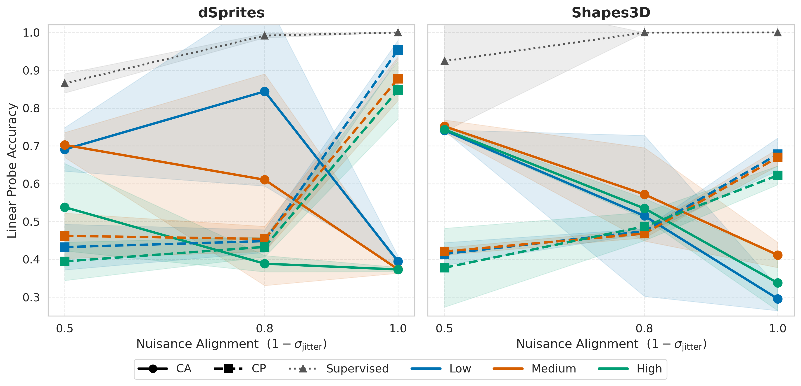
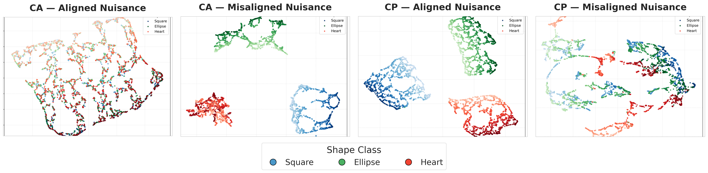
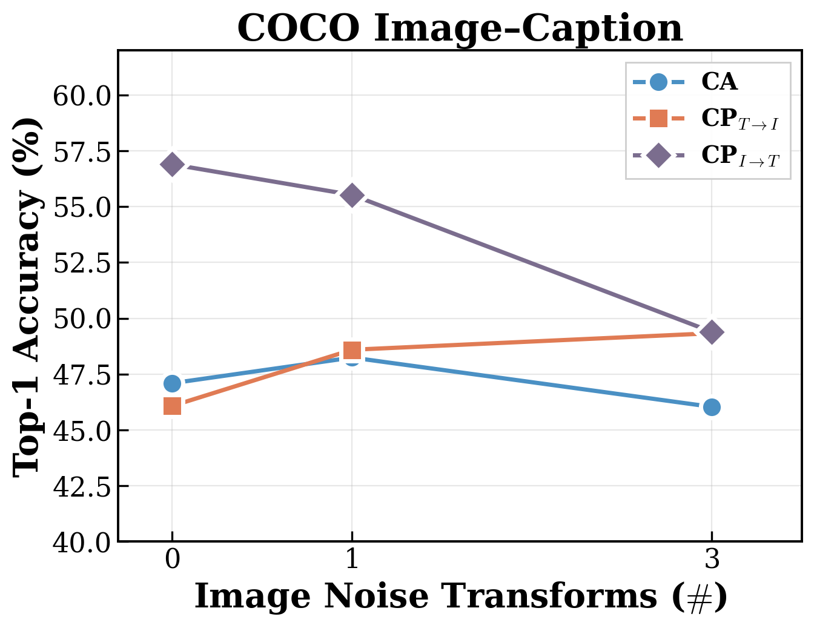
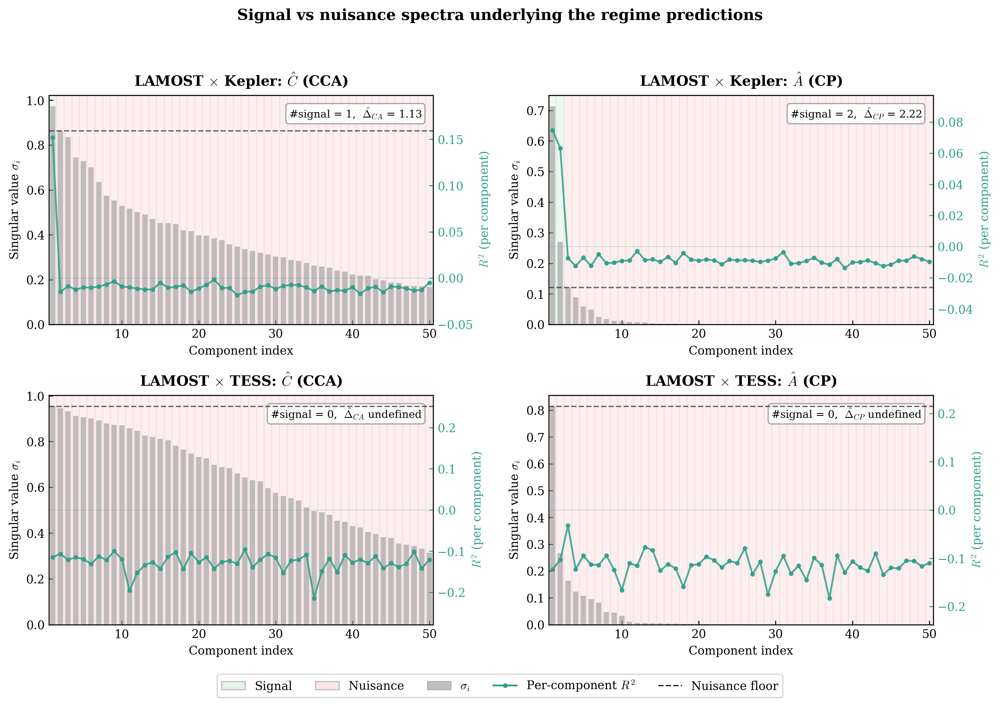

A Phase Diagram for Multimodal Self-Supervised Learning
1Technion ·
2Genentech ·
3Brown University ·
4Meta AI, FAIR
*Corresponding author:
ilay.kamai@campus.technion.ac.il
We study two objectives for multimodal representation learning. The first is cross-alignment (CA), which aligns paired samples in a shared latent space. The second is cross-prediction (CP), which predicts one modality from the other through an encoder–decoder factorization. Both are formalized below:
Let \(f_X : \mathbb{R}^{d_x} \to \mathbb{R}^k\) and \(f_Y : \mathbb{R}^{d_y} \to \mathbb{R}^k\) be encoders producing latent codes \(\mathbf{z}_x^{(i)} := f_X(\mathbf{x}_i)\) and \(\mathbf{z}_y^{(i)} := f_Y(\mathbf{y}_i)\) in a shared latent space of dimension \(k\). Let \(f_D : \mathbb{R}^k \to \mathbb{R}^{d_y}\) be a decoder. The two objectives are
With linear encoders \(f_X(\mathbf{x}) = W\mathbf{x}\), \(f_Y(\mathbf{y}) = V\mathbf{y}\) for CA, and linear encoder \(f_X(\mathbf{x}) = E\mathbf{x}\) and decoder \(f_D(\mathbf{z}) = D\mathbf{z}\) for CP, both objectives admit closed-form solutions expressible through the SVDs of two modality-coupling matrices:
where \(\Sigma_{xx}, \Sigma_{yy}, \Sigma_{xy}\) denote the (population) (cross-)covariances.
To analyze recovery, we posit a signal-plus-noise model in which each modality decomposes into \(k\) shared signal coordinates and \(d - k\) modality-specific nuisance coordinates.
The singular values of \(C\) and \(A\) split into signal values \(\{\rho_i,\,\tau_i\}_{i=1}^{k}\) and nuisance values \(\{\nu_j,\,\xi_j\}_{j=1}^{d-k}\), given by
CA (resp. CP) fully recovers the shared signal subspace whenever its signal singular values exceed its nuisance singular values. Defining the ratio of signal to nuisance singular values as the separation ratios, we define 4 different recovery regimes — Both, CP only, CA only, and Neither — as described in the following table:
| Region | CA recovers? | CP recovers? |
|---|---|---|
| Both | ✓ | ✓ |
| CA only | ✓ | ✗ |
| CP only | ✗ | ✓ |
| Neither | ✗ | ✗ |

Each method shine and fall under different scenarios: CA is symmetric and preferable when modality-specific noise is large or uncertain. CP is assymetric, requires the correct source-target direction, and is preferable when signal is strong and the modality-specific noise is weak.
Importatnly, the Neither regime is a carachteristic of real world problems with complementary modaitlies, and low signal-to-noise ratio. This regime requires novel alignment methods, beyond simple CA or CP.
We validate on dSprites and Shapes3D stereo-view datasets, sweeping jitter (de-alignment) and noise parameters to move across the phase diagram. CA (VICReg) and CP (MSE reconstruction) are trained from scratch; downstream accuracy is measured via frozen linear probe.

Linear probe accuracy vs. nuisance alignment \(\nu_{\max} = 1 - \sigma_{\text{jitter}}\). Left: Stereo-dSprites (3-class, grayscale, 100k samples). Right: Stereo-3DShapes (4-class, RGB, 100k samples). In both settings, color represents weak noise levels. In both panels, the trade-off between the methods is clearly seen. CA (solid, circles) peaks at moderate-to-low alignment and collapses at full alignment; CP (dashed, squares) shows the opposite pattern. The crossover at \(\nu_{\max} \approx 0.8\) is consistent across datasets. Lower absolute ceilings in 3DShapes reflect the harder discrimination task.

UMAP embeddings of learned representations of the stereo-dSprites experiment (color = shape, intensity = position). From left to right: CA with aligned noise (\(\sigma_{\text{jitter}}=0\)), CA with misaligned noise (\(\sigma_{\text{jitter}}=0.5\)), CP with aligned noise, and CP with misaligned noise. All experiments have the same modality-specific noise (\(\sigma_{\text{noise}}=0.5\)). Each method succeeds exactly where the other fails, and on failures, the models learn the nuisance.

Top-1 accuracy vs. image style transform strength for MS-COCO experiment. CP shows an asymmetric nature: prediction of image from text results in similar performance as CA but prediction of text from an image results in much better performance. Both approaches converge to the same accuracy when image noise is high.
| Task | CA | CP | CPrev | LAMOST | Photometry |
|---|---|---|---|---|---|
| LAMOST × Kepler — Both regime | |||||
| Binarity (bal. acc.) | 0.802±0.009 | 0.814±0.006 | 0.751±0.004 | 0.814 | 0.731 |
| log g (R²) | 0.956±0.003 | 0.976±0.001 | 0.639±0.004 | 0.977 | 0.542 |
| Age (R²) | 0.620±0.001 | 0.434±0.006 | 0.497±0.039 | 0.431 | 0.470 |
| LAMOST × TESS — Neither regime | |||||
| Binarity (bal. acc.) | 0.756±0.022 | 0.763±0.011 | 0.626±0.010 | 0.779 | 0.604 |
| log g (R²) | 0.929±0.005 | 0.939±0.001 | −0.312±0.001 | 0.942 | −0.312 |
| Age (R²) | 0.431±0.029 | 0.396±0.064 | −0.072±0.004 | 0.503 | −0.037 |

Each panel shows the sorted singular values (gray bars, left axis) and per-component \(R^2\) against \(\log g\) (teal line, right axis) used by our phase estimation algorithm to classify components as signal (green shading) or nuisance (red shading). Dashed horizontal line: nuisance floor \(\max_j \hat{\nu}_j\) (CCA panels) or \(\max_j \hat{\xi}_j\) (\(\Ab\)-SVD panels); \(\hat{\Delta} > 1\) iff every classified signal singular value exceeds the nuisance floor. Top: LAMOST × Kepler — both decompositions have signal components above the nuisance floor (\(\hat{\DCA} = 1.13\), \(\hat{\DCP} = 2.22\); Both regime). Bottom: LAMOST × TESS — no CCA component predicts \(\log g\) above noise (\(R^2 \approx 0\) across all components, zero signal detected); the \(\Ab\)-SVD has one candidate signal component but below the nuisance floor. Both ratios fall below one (Neither regime). The contrast between the two rows — same LAMOST encoder, same protocol, different photometric instrument — shows that instrument quality determines the signal–nuisance separation and hence the regime placement.
@article{,
title = {When to Align, When to Predict? A Phase Diagram for Multimodal Self-Supervised Learning},
author = {Kamai, Ilay and Van Assel, Hugues and Regev, Aviv and Perets, Hagai B. and Balestriero, Randall},
journal = {arXiv preprint},
year = {2026}
}